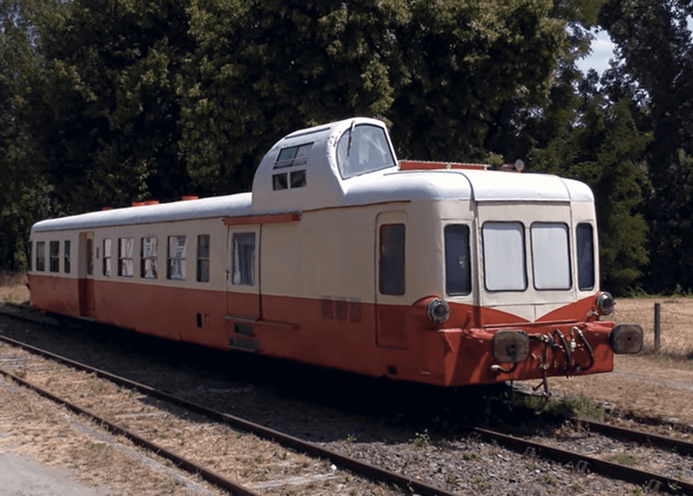

Objectifs de l'association
Nous militons pour la réouverture de lignes ferroviaires régionales fermées et abandonnées.
Le transport de marchandises
Le trafic lié au transport de marchandises augmente chaque année.
La part actuelle du transport routier est énorme : 90 %
1 train de fret = 10 camions avec semi-remorque
- en marchandises transportées
- en consommation de carburant
10 véhicules de transport routier consomment plus qu’un train
- en émission de co2 rejeté
1 tonne de co2 en moins par semi-remorque transportée en ferroviaire
Un rééquilibrage entre le transport routier et le transport ferroviaire au niveau local et
régional permettrait de réduire la saturation d'un réseau routier local peu adapté à la circulation de gros
camions ou bus
Le transport de voyageurs
Desserte locale
Permettre à davantage de voyageurs et touristes d'accéder à une vallée du Lot enclavée et
effectuer nombre d'activités intéressantes :
- visites de châteaux et bourgs médiévaux
- visites de domaines viticoles
- mini-croisières en péniche sur le Lot
- randonnées en vélo et vélo-rail
La ligne ferroviaire de Cahors à Capdenac
Ce chemin de fer va de Cahors, la préfecture du département du Lot, à Capdenac, un noeud
ferroviaire, ou étoile ferroviaire, croisement de 3 lignes :
- la ligne pour Rodez
- la ligne de Brives-la-Gaillarde à Toulouse
- la ligne pour Cahors
La ligne Cahors-Capdenac a été ouverte en 1886 et exploitée pendant près d'un siècle, en
trafic voyageur et fret, notamment pour concurrencer le trafic marchand sur le Lot.
En 1980, la ligne est interrompue au transport de voyageurs. Pas assez de clients. 🤔
La ligne est ensuite fermée aux trains de marchandises en 1989. Trop de frais d'entretien. 😔
En 1993, une association de passionnés, Quercyrail, reprend l'exploitation de
la ligne avec du matériel affrété à la SNCF, et moyennant une redevance conséquente à RFF (Réseau Ferré de
France).
Quercyrail a ainsi fait circuler des trains touristiques sur cette ligne,
notamment des autorails dits Picasso avec leurs cabines de conduite surélevées et décentrées sur le côté.

En 2002, le trafic fret a même repris, notamment pour transporter les poutres du viaduc d'Arcambal, où passe l'autoroute A20.
Mais en 2004, la SNCF estime que 1000 traverses doivent être remplacées sur la voie ferrée pour maintenir la circulation des trains. La SNCF demande 100 000 euros à Quercyrail pour les travaux. L'association ne peut pas payer cette somme et doit cesser son activité. 😥
Ce chemin de fer est maintenant laissé à l'abandon. Plusieurs projets sont à l'étude :
- déferrer et faire une voie verte
- faire les travaux et réouvrir la ligne